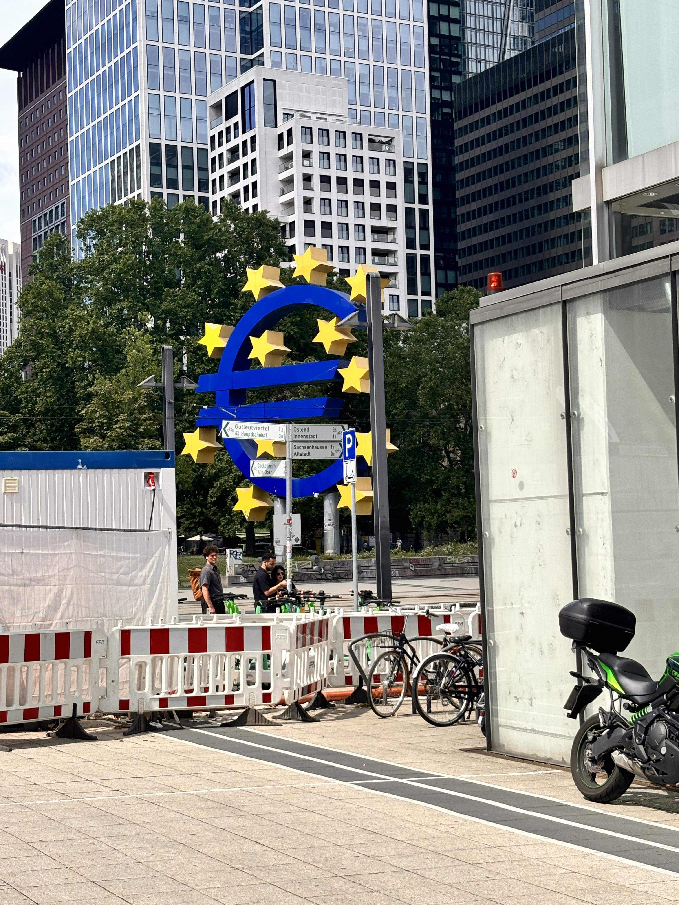
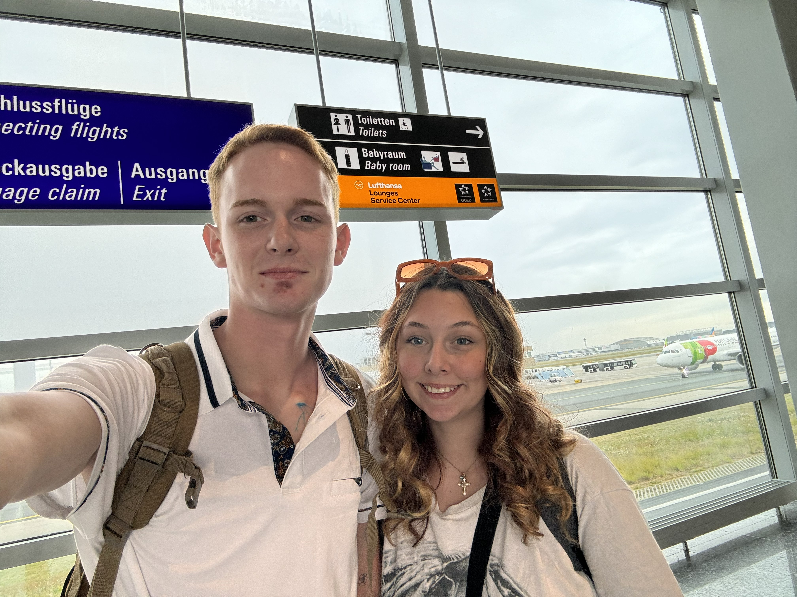
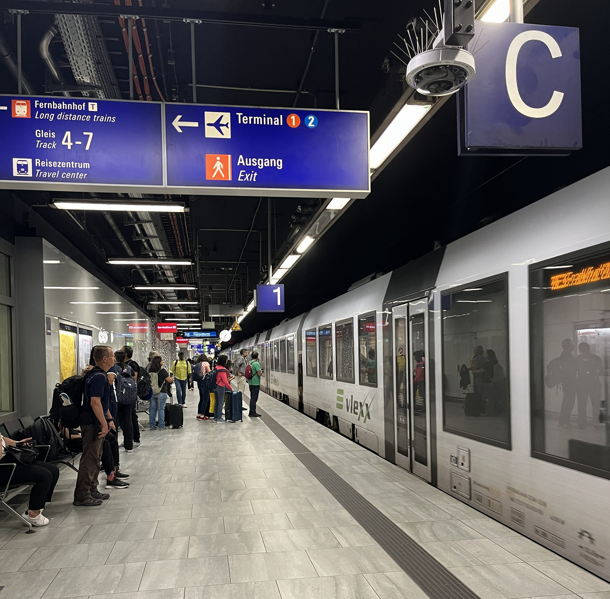
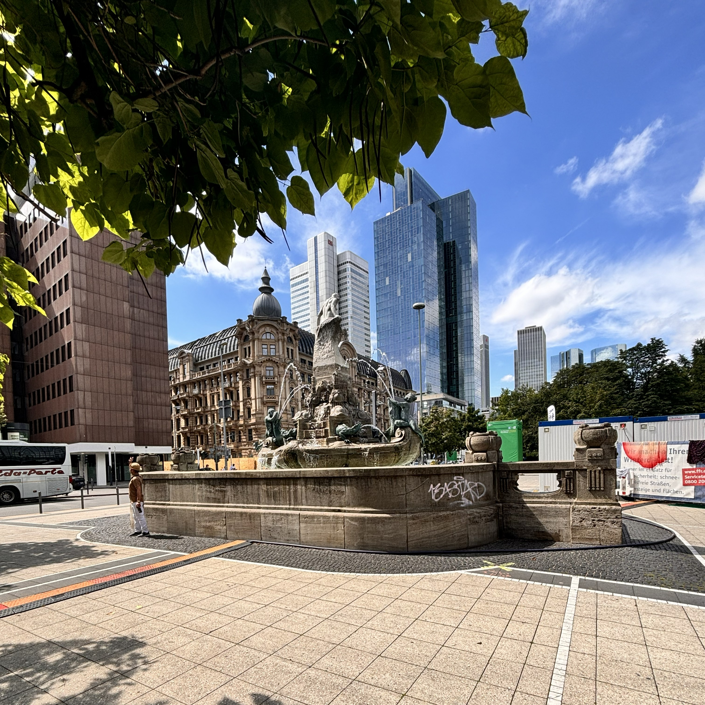
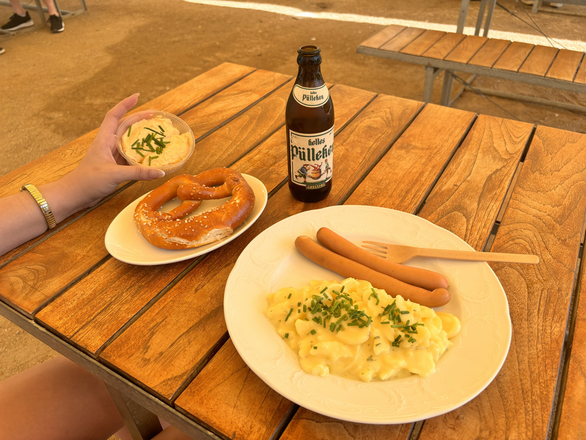

The quick snapshot
Stay details
Getting there
Travel: Flew in from Paris
Travel cost: $124.00
Rental car: None
Arrival notes: Overall it was pretty simple, and one very helpful man pointed us in the right direction to get into the city center. Apparently, all you have to do is stand at the ticket terminal a bit too long with a confused face and someone will assume you're American, begin speaking to you in English immediately, and show you the ropes. Shortly after that, we boarded the train and got comfortable. *Side note: We're generally pretty stellar about public transit.* The train went a few stops, stopped entirely, everyone got off, and a cleaning crew got on. We assumed it was everyone else's stop since my Google maps wasn't interested in helping. A few short minutes later, people got back on and the train started going...the other way. That's right, we went back to the airport. Luckily, we noticed rather quickly and got off on the first stop to self correct.
Recommendation: Yes, I would do it this way again. It was a short flight from Paris, and honestly those in flight Biscoff cookies make the whole trip worth it.
The pictures I want to keep with the trip

Euro-Skulptur, a starred sculpture installed in 2001 to symbolize the European Union

Train station selfie!

I would do anything for Arkansas to have a clean and reliable public transit system.

As you can see, the weather was so beautiful this day

When I asked for a frankfurter in Frankfurt, I was imagining a nice big ballpark hotdog. This skimpy little sausage made me wonder why we named a city after it. Then, I washed it down with some beer that tasted like pee. Thanks, Germany.

View from the ground in the middle of some skyscrapers.
Where we ate and what we ordered
Local bites
Food notes
Best drink: Water on the plane
Best food memory: While I didn't like it, trying the frankfurter where it actually belongs was a cool thing to mark off of the bucket list
Overall vibe: Casual, local, and good for a wandering day
Takeaway: Even a one-day stop feels more fun when you make room for at least one very location-specific bite.
For next time
- I honestly do believe that Germany has good food and good beer. Next time we go, we'll explore outside of Frankfurt. I'm super interested in Berlin, and have several friends who love the party scene there. Maybe we can convince one of them to give us a tour and show us where the good stuff is!
Overall food take
It was not an elaborate food stop, but it did give us a taste of the city and something specific to remember it by. Also, shortly after we finished eating Aiden decided to take a stroll along the river. I stayed put and did one of my discussion posts as I hadn't finished college at the time. While I was typing away and responding "Wow! Great post!", Aiden was being yelled at by a German man. He claims that the man started yelling at him in German, came closer, and whispered "Get out." I truly could not stop laughing when he told me and I'm giggling right now writing this.
What we did, day by day
Day 1
Date: July 9, 2024
Main plan: Fly in from Paris, take the subway into Frankfurt, walk around the city center, eat a frankfurter sausage, drink some beer, and explore the river and architecture.
Best part: The architure in this city was spectacular and definitely something worth noting
Worth repeating? Yes, but I want to get out of Frankfurt a bit more